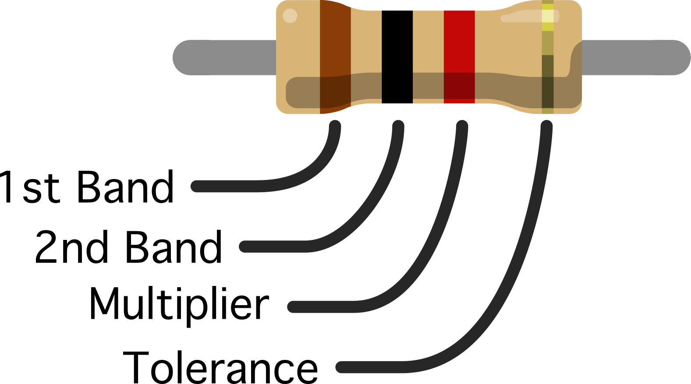

These three concepts define how and when electric charge flows, and controlling these things allows us to harness the power that electricity provides. While we can’t actually see voltage, current or resistance, there are some analogies we can use to help understand what each of these concepts are and how they interact with each other.
PIC: Battery resistive circuit vs water resistive circuitSimilar to the previous example, the Battery/Pump forces Electrons/Water around a closed loop (circuit). But we've now added a constriction (narrowing) to the pipe so we can discuss additional elements of the circuit:
|
ELECTRICAL CIRCUIT |
WATER CIRCUIT |
|---|---|
|
Voltage |
Pressure |
|
Current |
Current (water flow) |
|
Resistance |
Narrow pipe |
Voltage is essentially the difference in the amount of charge from one point in a circuit to another. An important electrical concept is that charge will typically only flow between two points that have a difference in charge (a voltage). Specifically, charged particles will flow from a point of higher (more positive) charge to a point of lower (more negative) charge. If there is the same amount of charge at two points in a circuit, no electric charge will flow.
Using our water analogy, voltage is analogous to the amount of pressure (basically, the force) that there is pushing water through a pipe filled with water. Imagine a water system that contains a water pump that is pushing water around a loop of a water-filled pipe (a 'circuit') -- water enters the pump at a low pressure and is forced out of the pump at a high pressure. It is this pressure difference that makes the water flow. Likewise in an electric circuit, the electric power source is analogous to the water pump -- a power source takes in charge at a low voltage and pushes it out at a high voltage. It is this difference in voltage on the opposite sides of the power source that makes the charged particles flow.
Finally, voltage are (virtually) always talked about between two points. That is, we always discuss a voltage difference between those two points. For example, if you've ever measured the voltage of a battery, you know that have to measure the voltage difference between the negative and positive sides. However, it is generally common to just discuss voltages at a single point in a circuit. This is because it is assumed that you are asking for the voltage difference between that point and ground, which is generally the lowest point of volatge in a circuit.
Voltage is measured in "volts", which are named after the Italian physicist Alessandro Volta, who was one of the first inventors of a rudimentary battery around 1800.
Current is the flow of electric charge through a circuit. Using our water analogy, current is the amount of water actually flowing through the pipe. In both cases, its measured by the amount of stuff (charge or water) that flows through the pipe in an amount of time.
Its important to note that in our simple circuit example above, the current is exactly the same at every point in the circuit. That is, if your were to look at any small segment of the circuit, the same amount of charge is going into that segment as is going out. This is true in the battery, the wires, and the resistor.
If you think about the water analogy, you might realize this must be true. If there was any segment of the circuit where there was more water continuouslly going into that segment than going out, then the pipe would ballon up at that point, or burst. But that doesn't happen - the flow of current happens around the entrie circuit all together, in lock step.
Current is measured in "amperes" ("amps", for short), which are named after the French physicist André-Marie Ampère, who researched electrical current and other phenomenon in the 1800s.
Benjamin Franklin is generally credited with defining the "positive" and "negative" values of charge. Unfortunately, he did so more than 200 years before the discovery of the electron. In other words, he didn't know what charge physically was, and in fact refered to it as the "electrical fluid". It turns out, you can understand many of the concepts of electricity without knowing the details of the physical particles that carry charge. In fact, you can think of circuits as having positive charges that flow in one direction, or negative charges that flow the opposite direction - the result is the same.
Franklin made the arbitrary choice to define current as the flow of positive charges from a positive voltage to a negative voltage. That is the same definition that we use today, and we call it "conventional current". However, we now know that the particles that actually move are the negatively charged electrons, and they flow from negative to positive voltage.
The thing to remember is that conventional current flows in the equal but opposite direction as electron current flows. And when engineers, teachers, and electricians say just "current", they mean "conventional current".
One additional unfortunate twist: physicists like to use "current" to mean "electron current", and so physicists have a backwards convention compared to everyone else. But, unless you become a physicist, you can just ignore that!
If a water pipe is constricted (narrow), then less water can flow through it (for a certain water pressure). This concept is familiar to anyone who has played with a garden hose - if you pinch the hose, less water comes out. If you pinch the hose hard enough, no water comes out.
As you might imagine from the water analogy, if the more resistance there is the less current. That is, the more constricted the pipe is, the less amount of water that can flow through it.
Also notice that the voltage at the top of the resistor will be less than the voltage a the bottom of the resistor. This difference in voltage is called the voltage drop across the resistor. This is similar in the water analogy - when water is forced into a narrow pipe, the water gets "squished" together at the narrow entrance, and the pressure is greater there than after then end of the narrow region.
Resistance is measured in "ohms", which are named after physicist Georg Simon Ohm, who studied electrical resistance in the 1800s.
You can't tell how much resistance a resistor has by the size of it. One resistor that is exactly the same size and shape as another can have a million or more times as much resistance. Because of this, some resistors are labelled with a color code - a set of colored bands that indicate what the value of the resistance, in ohms. The color code matches a color with each of the digits 0-9:
|
COLOR |
DIGIT |
|---|---|
|
BLACK |
0 |
|
BROWN |
1 |
|
RED |
2 |
|
ORANGE |
3 |
|
YELLOW |
4 |
|
GREEN |
5 |
|
BLUE |
6 |
|
VIOLET |
7 |
|
GRAY |
8 |
|
WHITE |
9 |

As shown above, the first 2 bands of color are the first two digits of the resistance. The third band is a 10-times multiplier - it is the number of zeros to add to the end of the number.
For example, for the resistor shown above, the color bands are brown, black, and red, which corresponds to the numbers 1, 0, and 2. Therefore, the resistance is "10" followed by 2 zeros, which is 1000 ohms.
With the basic definitions of voltage, current and resistance in hand, you're ready for one of the fundamental equations in circuit theory, Ohm's law:
Voltage = Current · Resistance
It says that, for a component in a circuit, the voltage drop across that component is equal to the current through that component times the Resistance of that component.
Thinking about a constricted pipe in the water analogy, this makes a lot of sense. What it says is, for a given amount of resistance, if you increase the voltage some percentage, the current will increase by the same percentage. Or in terms of water, if you increase the pressure some percentage, the water current will increase by the same percentage.
For example, for a given constriction in a pipe, if you pump twice as hard, twice as much water will flow.
A similar relationship is true for resistance:
PIC: resistive circuits, with resistance changing
Assuming the pumping pressure stays constant, as the resistance increases (the pipe gets narrower), the current decreases by the same percentage. For example, if the resistance doubled, the current would be half as much.
The same is true with electric circuits, and there are variable resistors (sometimes called potentiometers or "pots") that allow you to change the resistance in a circuit by turning a knob.